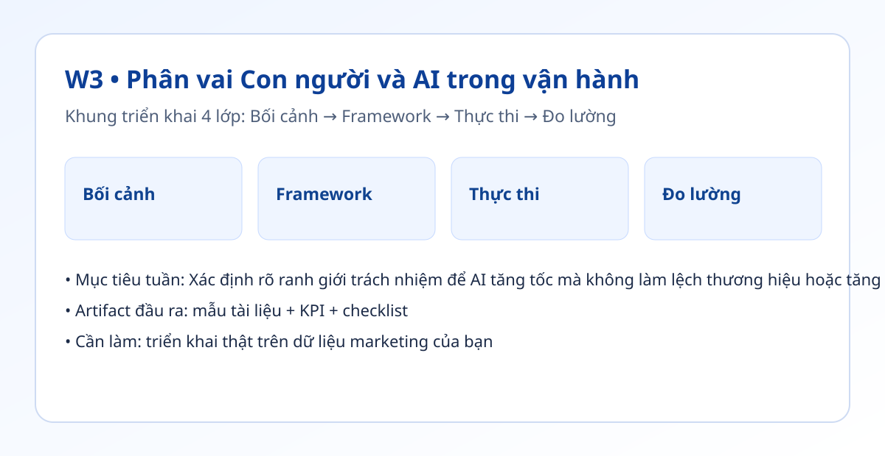

Hình trực quan mô-đun

Bối cảnh thực tế
- Khi không có phân vai rõ, AI thường bị dùng sai chỗ: hoặc giao quá ít, hoặc giao cả phần quyết định chiến lược.
- Nhóm làm marketing cần một ma trận trách nhiệm để biết bước nào AI tự động, bước nào con người duyệt.
- Tuần này bạn hoàn thiện bản đồ Human vs AI cho quy trình thật của mình.
Khung tư duy cốt lõi
- Ma trận 2 trục: Mức lặp lại của công việc × Mức rủi ro khi sai.
- 4 nhóm trách nhiệm: AI chính, AI hỗ trợ, Con người chính, Không tự động hóa.
- Nguyên tắc kiểm soát: nội dung ảnh hưởng pháp lý hoặc cam kết thương hiệu phải có bước duyệt con người.
Quy trình triển khai chi tiết
- Bước 1: Lấy danh sách 20 công việc lặp lại trong tuần.
- Bước 2: Chấm mỗi việc theo 2 tiêu chí: lặp lại cao/thấp, rủi ro cao/thấp.
- Bước 3: Phân loại vào 4 nhóm trách nhiệm và ghi rõ người chịu trách nhiệm cuối.
- Bước 4: Chọn 3 việc pilot tự động hóa trong 2 tuần tới.
- Bước 5: Định nghĩa checklist duyệt cuối cùng cho phần con người giữ quyền quyết định.
- Bước 6: Theo dõi thời gian tiết kiệm và lỗi phát sinh để điều chỉnh phân vai.
Tình huống nhỏ với số liệu
| Công việc | Phân vai | Kết quả |
|---|---|---|
| Tạo 5 tiêu đề biến thể | AI chính | Giảm 40% thời gian |
| Duyệt claim quảng cáo | Con người chính | Giữ an toàn thương hiệu |
| Tổng hợp phản hồi khảo sát | AI hỗ trợ | Giảm 30% thời gian |
Kết luận: Phân vai rõ giúp tiết kiệm thời gian mà vẫn giữ chất lượng quyết định ở các điểm nhạy cảm về thương hiệu.
Sản phẩm bàn giao tuần này
- Ma trận Human vs AI 1 trang.
- Danh sách 3 pilot tự động hóa có chủ nhiệm và timeline.
- Checklist duyệt cuối cho nội dung rủi ro cao.
Bài tập thực hành (45-60 phút)
- Áp dụng ma trận cho 1 quy trình đang chạy.
- Trong 1 tuần, đo tổng phút tiết kiệm từ 3 pilot.
- Ghi nhận số lỗi và nguồn lỗi (AI hay brief hay QA).
Thang đo hoàn thành
| Mức | Mô tả |
|---|---|
| Mức 0 | Không có phân vai |
| Mức 1 | Phân vai nhưng chưa có người duyệt cuối |
| Mức 2 | Có pilot và KPI tiết kiệm thời gian |
| Mức 3 | Có cơ chế kiểm soát rủi ro thương hiệu |
Lỗi thường gặp
- Giao AI luôn cả nội dung có rủi ro pháp lý.
- Không có checkpoint duyệt cuối.
- Thiếu đo lường nên không biết pilot có hiệu quả hay không.
Video thực hành (tùy chọn)
Phần học chính đã đầy đủ bằng văn bản và ví dụ. Nếu bạn muốn xem thao tác thực tế, dùng các video gợi ý sau:
Đánh dấu tiến độ
Tuần này chưa hoàn thành
Đã hoàn thành tuần 3